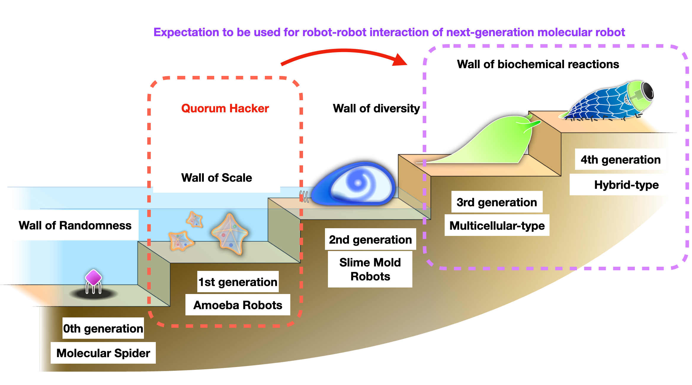

The essence of a ”Quorum Hacker” is to detect quorum sensing among bacteria and perform the appropriate outputs. In other words, “Quorum Hacker” not only inhibits quorum sensing, but also amplifies signals and can be used as a biosensor, and is expected to be applied to beneficial biofilm utilization technology and the medical field. The signaling mechanism of “Quorum Hacker” can also contribute to the evolution of molecular robotics by utilizing it as a part to realize robot-robot interaction to operate multicellular molecular robots, which are third-generation molecular robots, and hybrid robots, which are fourth-generation molecular robots.
Acknowledgement Prof. Shogo Hamada (Tohoku University) provided the illustration.